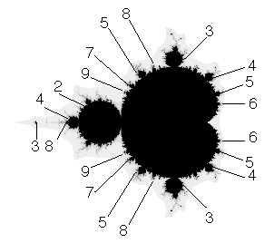

|  |
| One way the sequence zn can remain bounded is by converging to a fixed point or a cycle. |
| To every disc and cardioid component of the
Mandelbrot set there corresponds a cycle |
| That is, |
| Fc(z1) = z2, Fc(z2) = z3, ... , Fc(zn) = z1 |
| The cycle lengths (n) of some components are shown in the diagram above. |
| Note each zi is a fixed point for Fcn(z): |
| Fcn(z1) = Fcn-1(Fc(z1)) = Fcn-1(z2) = ... = Fc(zn) = z1. |
Return to Hurwitz-Robucci scaling.